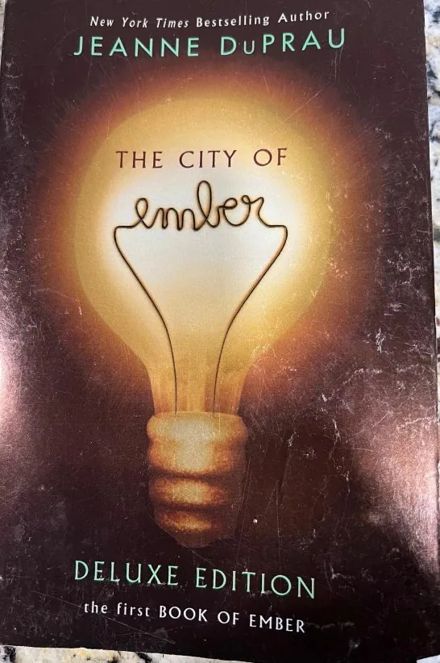

Kids' Books
Jeanne DuPrau - The City of Ember - Deluxe Edition - Paperback - Used
$5.00💳 Buy now with card
The city of Ember was built as a last refuge for the human race, but after two hundred years its great lamps are starting to flicker. When Lina finds part of an ancient message, she and her friend Doon race to decode it before the lights go out for good. The first Book of Ember from New York Times bestselling author Jeanne DuPrau.
Features & benefits
- Paperback, Deluxe Edition
- Book 1 of the Books of Ember series
- New York Times bestselling author
- An exciting adventure-mystery for middle-grade and teen readers
- Pre-owned: cover shows some wear (see photo)
- 🔒 Secure checkout
- 🚚 Ships from Denver, Colorado (USA)
- ↩️ 30-day returns
Questions? Call or text +1 720 799 4089 or email info@akiliwomarketplace.com